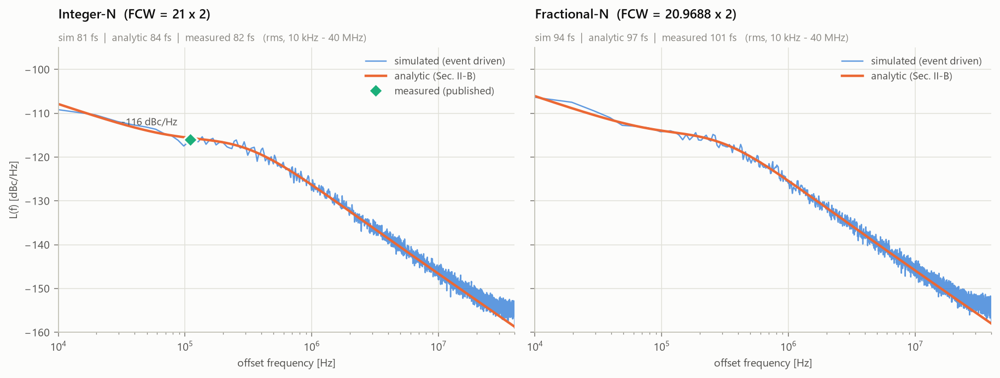
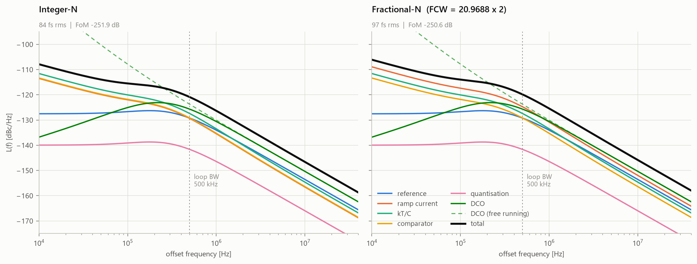
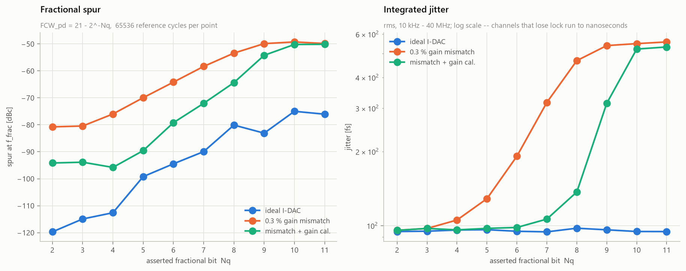
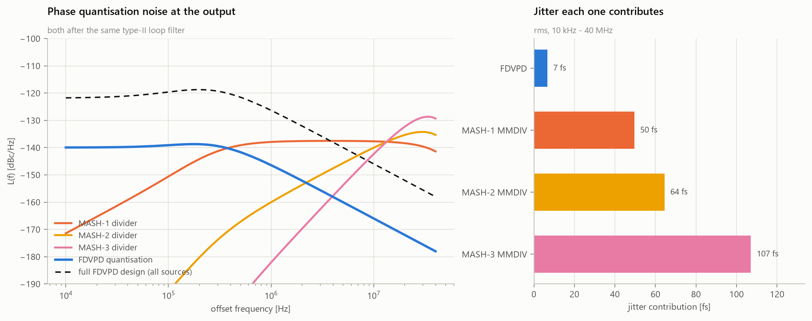
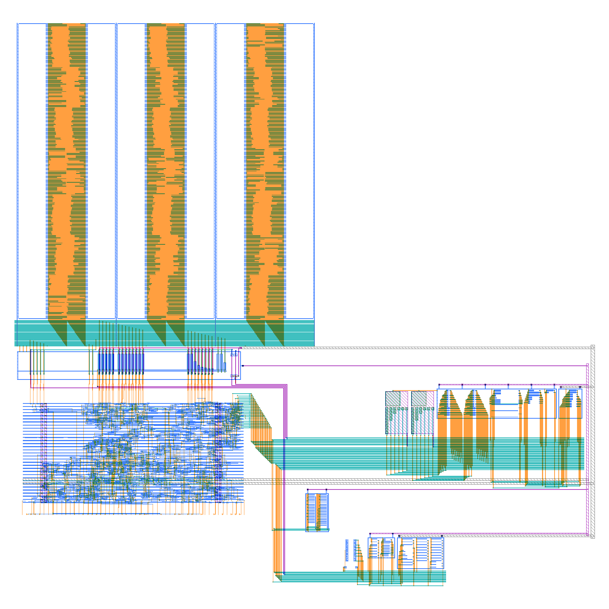

Reproduction & verification study
fdv-adpll v1.1.0 283 tests 16 384-point dataset sky130A detector, DRC / LVS clean September 2026
We reproduce the fractional-N digital PLL of Wu et al. [1], in which the phase error is quantised in the fully differential voltage domain, as two independent behavioural models: an s-domain noise analysis implementing the paper's equations (1)–(13), and an event-driven simulator that advances individual oscillator edges through behavioural blocks. The two share nothing but a parameter set, so their disagreement is a verification signal rather than a coincidence. The reproduction lands on the published measurements — 81 fs simulated and 84 fs analytic against 82 fs measured, with one fitted parameter that the paper itself identifies as missing from its analysis.
Cross-validation exposed eight defects. Six produce no observable error in integer-N operation and appear only in fractional channels; the two worst inflated fractional-N jitter from 94 fs to 51.6 ns. Three further defects, in the simulator's acquisition path, surfaced later during the silicon work, and they follow the same pattern: all three need a fractional channel or an oscillator that starts fast. We argue that this asymmetry is structural, not incidental, and identify the mechanism behind each blind spot.
We then Sobol-sample an 18-parameter design space into a 16 384-point dataset. The s-domain model has no representation of lock, so the dataset carries a derived capture-margin feature to filter on. Where the loop does lock, the analytic jitter labels agree with the simulator. All 48 cross-checked points locked, the median ratio in every bandwidth bin is within three per cent of unity, and 43 of the 48 individual points are within ten per cent. An earlier version of this study reported the labels as up to 4.65× optimistic. That gap was the three acquisition defects, not the analytic model.
Finally we use the verified model as design entry. It generates a sky130A specification for the detector, which we then build: a 10-bit current DAC, a ramp sink, a bias reference, a SAR front end and a synthesised control macro, assembled into a 510 × 495 µm layout that is DRC clean and LVS matched, with the control RTL co-simulated against the transistor netlists. Failures in our own verification apparatus are reported alongside the result, because each is the kind that passes silently. Examples are a circuit that met every performance target while biased above its supply rail, a limit-finder that reported the first failing sweep point as the permitted value, and a timing constraint that left 129 register pins untimed.
This is a reproduction study, so the boundary matters and is worth drawing before anything else.
A fractional-N synthesiser has to remove a known, large, deterministic phase ramp before it can measure the small residual error it actually cares about. Where that subtraction happens decides the architecture. A multi-modulus divider dithered by a MASH modulator subtracts in the time domain and leaves behind quantisation noise the size of one whole output period, shaped upward in frequency. A time-to-digital converter quantises first and subtracts afterwards, so its resolution has to cover the full ramp.
The design of [1] subtracts in the voltage domain. A 10-bit segmented current DAC drives a differential capacitor to the voltage that represents the predicted fractional delay; the reference edge then starts a ramp that discharges it at a fixed slew rate, and the divided oscillator edge stops the ramp. Only the residue is digitised, by a 7-bit self-timed SAR. The converter never sees the ramp it removed.
The arithmetic is worth stating because it motivates everything downstream. With a 1.68 GHz detector rate the period is 595 ps; ten bits of DAC put one LSB at 581 fs, and a 118 µV ADC LSB against a 0.8 mV/ps slew rate resolves 147.5 fs. Their ratio is a detector with roughly 12.0 bits of resolution over one detector period, built from two converters that individually have ten and seven.
Derived quantities, checked against the values quoted in [1]. The effective resolution is the detector period divided by the ADC time LSB — a consequence of sub-ranging, not of either converter alone.
The reproduction carries two models that overlap only in what they describe.
This implements the in-band noise analysis directly: the gated ramp-current term, kT/C
sampling noise, comparator noise and quantisation, each referred to output phase, then shaped by
the closed-loop transfer functions. Written with the detector's time LSB rather than
T_CKV/2**N, the quantisation term stays unambiguous about the feedback
divide-by-two:
Twelve bits over a 595 ps detector period and eleven bits over a 298 ps output period are then the same statement, which is what one would want a bookkeeping convention to guarantee.
The second model advances real divided-oscillator edges. Each reference cycle it accumulates the ideal phase as an exact integer–fraction pair, selects the edge the clock gate would pass, pushes the resulting delay through behavioural models of the DAC, ramp and SAR, and feeds the code to a type-II digital loop filter driving the oscillator. Device imperfections live in the blocks: segmented-DAC mismatch and settling, ramp gain error and curvature, SAR capacitor mismatch. Fractional spurs therefore emerge rather than being injected.
Neither model is a reference implementation of the other. One integrates a closed-form spectral density; the other counts edges and quantises voltages. The only object they share is the parameter dataclass. When both land on the same jitter figure, it is difficult to construct a story in which both are wrong in the same direction — and when they diverge, the divergence localises a defect.
Table 1 gives the outcome. The agreement between the two models is close enough that the remaining gap to measurement is dominated by the measurement itself.
| Channel | Simulated | Analytic | Measured [1] |
|---|---|---|---|
| Integer-N jitter | 81 fs | 84 fs | 82 fs |
| Integer-N L(110 kHz) | −116 | −116 | −116 dBc/Hz |
| Fractional-N jitter | 94 fs | 97 fs | 101 fs |
| Figure of merit | −252.3 | −251.9 | −252 dB |
Fractional channel is FCWpd = 20.9688, the near-integer case used in the paper. Figure of merit at the measured 9.2 mW.
Implemented from the published equations and published device values alone, the model comes out 4 to 7 dB optimistic in band. That is expected: the paper states that its s-domain analysis neglects flicker noise from the ramp generator, and attributes the measured excess between 1 and 100 kHz to exactly that. Restoring a single term — a 520 kHz flicker corner on the detector's thermal contributions — reproduces both quoted jitter figures and the quoted in-band density. A least-squares fit was also free to add a white excess-noise term and returned 0.0 dB, so the published thermal equations need no correction.

With the detector budget decomposed, the ramp-current term dominates in a fractional channel because the gating window is open longer on average, and quantisation — the thing the architecture exists to minimise — contributes about two per cent.
| Contribution | Density | Share |
|---|---|---|
| Ramp current | −126.2 dBc/Hz | 51.5 % |
| kT/C sampling | −128.8 | 27.9 % |
| Comparator | −130.6 | 18.5 % |
| Quantisation | −140.0 | 2.1 % |
| Detector total | −123.3 | — |

The analysis includes a detector power model in which, at each power budget, the split between ramp current and comparator power is re-optimised with the slew rate held fixed. Run at 1 mW, the optimiser returns 227 µA of ramp current, 567 fF of sampling capacitance and a 99 µV comparator. The prototype uses 220 µA, 550 fF and 100 µV. Nothing in the optimiser was fitted to those numbers, so their coincidence is a check that the reproduced power model and the reproduced noise model are consistent with each other and with the silicon.
The two models were brought into agreement by fixing the implementation, not by tuning it. Building a test suite around the paper — each derived quantity against the value the text quotes, each equation against its closed form, each block against the imperfection it exists to model, and the simulator against the analytic model — surfaced eight defects.
| Component | Defect | Integer-N |
|---|---|---|
| Spur measurement | Every spur reported 3.01 dB low — a spurious factor applied to an rFFT bin already equal to A/2. | Visible |
| MASH modulator | Crashed for orders 1 and 2: the error-feedback delay line was sized order+1 but indexed at 3. | Blind |
| Oscillator banks | The coarse tuning bank's contribution was subtracted only on the cycle that moved it, and never released. | Blind |
| Oscillator periods | The period generator silently returned fewer samples than requested, corrupting edge times. | Blind |
| Frequency-lock path | An integer edge count compared against a fractional frequency word, so the error never reached zero. | Blind |
| Frequency-lock path | No measurement window: the counter's 160 MHz quantisation exceeded the detector's capture range. | Blind |
| Phase accounting | The integer phase term double-counted a cycle whenever the ramp window swept through zero. | Blind |
| Oscillator gain cal. | Treated the counter difference as a frequency change when it is the absolute frequency; diverged 12 kHz → 131 kHz. | Visible |
Six of the eight defects produce no observable error in an integer-N channel. This is not coincidence, and the mechanisms are worth naming individually, because each is a case where an integer channel holds a quantity at a value that happens to be the defect's fixed point.
The generalisation is that the simplest operating mode of a mixed-signal loop tends to be the one in which the largest number of internal quantities are constant — and a constant is exactly what a defect needs in order to hide.
Before repair, the model reproduced the paper's integer-N measurements to within three per cent while producing 51.6 ns of jitter and a −16 dBc spur in the fractional channel it was supposed to reproduce at 101 fs — an error of nearly three orders of magnitude, sitting behind a headline result that looked correct.
After repair, fractional channels from bit 2 to bit 11 agree with the analytic model to within three per cent, with spurs between −75 and −120 dBc.

The eight defects above were found by comparing the two models in lock. Three more were found later, and they were found because the silicon work (§7) kept producing symptoms that looked like a design with a thin acquisition margin. Some tolerance sweep points failed to lock while their neighbours were clean, and a faster loop gear locked with ideal devices but not with any perturbation. The margin was not thin. All three defects were in how the simulator forms the phase error while the detector is railed:
Two of the three exist only in fractional channels, and the third only when the oscillator starts fast, a case no test exercised. Acquisition over fractional bits 0 and 2–14, at −30, 0 and +30 MHz and two seeds each, went from 16 of 42 cells not fully locked to 0 of 42 at the sky130 operating point. At the paper's operating point it went from 7 of 42 to 0. None of the reproduction numbers in Table 1 moved, because in steady lock none of the three code paths acts. That is the blind spot again: the headline result was insensitive to exactly the defects that mattered elsewhere.
With both models trusted, the analytic path is cheap enough — milliseconds per point against seconds for an event-driven run — to survey the design space. We Sobol-sample 18 parameters spanning the detector devices, the oscillator, the reference and the loop, and evaluate each point into 53 columns: the parameters and derived quantities as features; the four in-band noise terms, the output density at four probe offsets, jitter, power and figure of merit as targets.
Infeasible points are retained with the constraint they violated rather than dropped — where sub-ranging stops working is part of the physics worth recording. The dominant in-band term is the ramp current in 46 % of feasible designs, the comparator in 32 %, kT/C in 20 % and quantisation in 2 %.
The s-domain analysis will return a perfectly well-formed jitter figure for a design whose phase detector would be railed from the first cycle, because nothing in a spectral density knows that the converter has ends. This is not a defect in the analysis — it is outside its remit — but it is fatal to the naive use of such a model as a label generator.
We therefore add a derived quantity: the detector's capture window,
adc_full_scale / SR, divided by six times the rms residual the loop does
not correct, which is the oscillator and reference noise high-pass filtered by the loop
transfer function. Below a margin of roughly five, the simulator stops locking.
Applying that constraint together with a bandwidth ceiling, we cross-checked 48 feasible points with the full simulator, and all 48 locked. Both thresholds were first measured with a simulator that still had the three acquisition defects of §5.2, so they are now conservative. Of 48 rows that only these constraints reject, 20 of the 23 rejected for bandwidth above 1 MHz now lock (4 before), and 13 of the 25 rejected for a capture margin below six do (0 before). The margin constraint is still partly real, since 5 of the 15 rows below a margin of three lock, but both thresholds need re-deriving before they are trusted to shape a dataset.
An earlier version of this study reported the opposite. Only 38 of the 48 cross-checked points locked, and on those the simulated jitter exceeded the analytic estimate by a factor that grew with loop bandwidth, reaching 4.65×. We attributed this to the closed-loop transfer function being a continuous-time approximation of a loop sampled at the reference rate.
That explanation was wrong. The gap was the three simulator defects of §5.2, which left loops railed or limit-cycling while still reporting a jitter figure. With them repaired, the same 48 points all lock, all 48 fall within 1.5×, and the median ratio in every bandwidth bin is within three per cent of unity. Individual points range from 0.84 to 1.24, and 43 of the 48 are within ten per cent. The analytic model was right all along. We keep the retraction in the report because it is a clean instance of the thesis of §5: two independent models disagreed, and the disagreement localised a defect. It just took a second look to find that the defect was in the reference model, not in the surrogate.
The same machinery makes the paper's opening argument numerical. Comparing the residual quantisation of this detector against a MASH-dithered multi-modulus divider, after identical loop filtering, the divider costs between 50 and 107 fs of jitter against 6.6 fs — on its own comparable to the entire measured budget of the design it would replace.
A second-order effect falls out of the same calculation: a higher MASH order is worse, not better, behind a bare type-II loop. The loop rolls off at 20 dB/decade while the shaping rises at 40 or 60, so the steeper modulator wins in band and loses everywhere else. That is the extra filtering an MMDIV-based synthesiser needs and this architecture does not.

A model that reproduces a measurement is in a position to do something a document cannot: be the design entry for the next implementation. We retarget the detector to sky130A, with the specification generated by the same code that reproduces [1] rather than transcribed from it, so the spec and its golden reference cannot drift apart.
The paper's operating point does not survive the move. It wants a 3.36 GHz oscillator, a 0.8 mV/ps ramp and a 118 µV comparator. Retargeting to a 1 GHz output and a 500 MHz detector rate leaves a 2 ns period, which makes every timing target 3.4× easier and relaxes the voltage targets with it. The model says the detector still reaches 12.0 effective bits, with an in-band floor within about a decibel of the original (−122.3 against −123.3 dBc/Hz). The ramp is single-ended: one 200 µA sink discharges vn into 0.5 pF and vp is left alone. The DAC's outputs sit between 1.4 and 1.8 V, so a PMOS source ramping vp upward would have to pass the supply. One sink of SR · CSAR gives the same differential slope, and in the model's terms its current noise and kT/C come out identical, so the noise equations need no change.
The oscillator does not scale the same way, and the model says so quantitatively: at this operating point it attributes 88.7 % of the output jitter variance to the DCO. A low-noise 1 GHz LC oscillator in sky130's metal stack is a project in its own right, so the detector is specified, built and verified standalone and the oscillator is explicitly out of scope. That decision is made by a number rather than by taste, which is the point of having the model.
| Quantity | sky130A | Original [1] |
|---|---|---|
| Output / reference | 1.00 GHz / 50 MHz | 3.36 GHz / 40 MHz |
| Detector period | 2000 ps | 595 ps |
| Slew rate (diff.) | 0.40 mV/ps | 0.80 mV/ps |
| Ramp current, C_SAR | 200 µA single-ended, 0.5 pF | 220 µA, 550 fF |
| DAC LSB | 1.95 ps | 581 fs |
| ADC LSB | 195 µV = 488 fs | 118 µV = 147.5 fs |
| Effective resolution | 12.00 bit | 12.0 bit |
| In-band floor | −122.3 dBc/Hz | −123.3 dBc/Hz |
| Detector power (model) | 0.62 mW | 1.0 mW |
Device areas are set by how much imperfection the loop tolerates, not by how much the block tolerates in isolation, because the loop filters some of it away. Each entry below is therefore produced by sweeping one imperfection in the event-driven simulator until the fractional spur crosses −60 dBc or the loop stops locking, at fractional bit 5.
| Imperfection | Limit | As first reported | Sets |
|---|---|---|---|
| dac_sigma_lsb | 0.025 LSB rms | 0.05 | Unit current-source area |
| dac_gain_err | 0.20 % | 0.40 % | Ramp/DAC reference tracking |
| dac_settle_tau | 4000 ps | 6000 ps | Switch Ron × C_SAR |
| ramp_nl2 | 0.0025 /V | 0.005 | Ramp sink output impedance |
| adc_sigma_cap | 8.00 % | 1.00 % | SAR unit capacitor area |
Four limits tightened and one loosened by a factor of eight. The
adc_sigma_cap entry is the consequential one: at 1 % it demanded roughly
64× the capacitor area actually needed, in the one block this architecture is specifically
supposed to let you make small, because the SAR only ever sees the residue.
Two entries deserve reading rather than just using. dac_sigma_lsb at
0.025 LSB rms is 0.0024 % of full
scale on a 10-bit converter, and will dominate the unit-element area — it is the binding
constraint of the five. adc_sigma_cap at 8 % is not a
constraint at all, which is the sub-ranging architecture paying off in the place it was
supposed to.
One caveat carried with the table: each point runs on three seeds, and for the mismatch sweeps the seed is the device draw, so the reported spur is the worst of the three. That is a crude upper quartile, not a yield figure. A budget that will actually be built from wants Monte-Carlo at a stated confidence, and these numbers are the starting point for that rather than a substitute.
Both were found while producing the numbers above, and both have the same shape: a check that reports success because it is not measuring the thing that can fail.
A circuit that passes every performance target and cannot be built. The first-cut ramp generator — a plain NMOS mirror — hit its slew rate but missed the curvature budget, which is what a cascode is for. The cascoded version measured 0.0015 /V against what was then believed to be a 0.005 /V budget: a clean pass on every measurement in the testbench. It was also unbuildable. Its cascode gate needs 2·VGS, which at this bias is 1.84 V on a 1.8 V supply; the ideal current source in the testbench drove the node there without complaint, because an ideal current source has infinite compliance. Nothing in a performance measurement detects an unrealisable bias point.
The fix is not a better cascode but a better testbench: it now measures
bias_headroom explicitly, and the number goes negative on any arrangement that
cheats. The general form of the lesson is that a testbench should assert the conditions its own
idealisations depend on — every ideal source is a promise that the real one will have the
compliance, and the promise is worth checking.
The circuit that replaced it is a wide-swing cascode, chosen for the supply-headroom reason rather than the swing reason it is usually chosen for. One W/4 device sets the gate at 1.18 V with 0.62 V of compliance left, and cascoding the reference branch from the same node puts both mirror drains within 3.7 mV of each other — which also recovers a 3 % slew-rate error that the intermediate, supply-violating version had.
A limit-finder that quoted the first failing value as the permitted one. The sweep in
§7.2 originally recorded the first value at which the design failed and reported it as the
tolerance limit. That is off by one step in the direction that matters: it hands the designer
the exact geometry that has just been demonstrated not to work. For
dac_gain_err it reported 0.40 % when
0.2 % was the largest value that actually passed — a
two-to-one under-design.
Compounding it, the search latched onto the first failure and never reconsidered. The
sweeps contain occasional acquisition races where one random draw fails to lock while its
neighbours are fine, and one such race at the smallest swept value of
adc_sigma_cap set that limit to 1 % when the design
in fact tolerates 8 % — an over-design of roughly
64× in capacitor area, in the block the architecture is
specifically supposed to let you make small.
A third error was in the sweep ranges rather than the search. ramp_nl2 was
quoted at 0.005 /V, which was simply the bottom of its range; that
value does not meet the spur target, so the real limit had never been inside the sweep at all.
It is 0.0025 /V. A limit that coincides with the end of the range
is not a measurement, and is worth treating as a prompt to extend the range.
Re-running failures on extra seeds and accepting the point if any seed passed
removes the acquisition races, and is backwards for mismatch. In those sweeps the seed
is the device draw, so best-of-three means sizing from the luckiest die — it
reported dac_sigma_lsb at 0.1 LSB against the
0.025 the pessimistic draw supports.
The reduction has to be asymmetric, because the seed means two different things at once: the spur is taken as the worst of the seeds that locked, while lock requires only a majority. A genuine tolerance limit fails on every seed; a race does not.
So the repair is: report the largest value that passes, end the sweep at the first confirmed failure, reduce across seeds in the direction appropriate to what the seed represents, and print enough significant figures that the rounding does not reintroduce the original error — 0.025 displayed to two decimal places is 0.03, which is again a limit quoted looser than the one measured.
With the specification settled, the whole detector is implemented in sky130A with open-source tools only: ngspice, magic, netgen, KLayout, Icarus Verilog and LibreLane, run in the IIC-OSIC-TOOLS container. Every analog cell is generated by a Python script, so geometry and netlist are reproducible from source. Each block is verified on its own (DRC, extraction, LVS against a reference netlist) before the top level is assembled.
| Block | Verified in simulation | Layout |
|---|---|---|
| Ramp sink | Wide-swing cascode; 9 corners, post-layout | 34.0 × 21.2 µm, clean |
| Current DAC, 10 b | 13 corners; 200-draw Monte-Carlo through the loop; post-layout at tt | 264 × 317 µm, clean |
| Bias | 13 corners; start-up from a slow supply ramp at every corner | Clean |
| SAR front end | Full-range front end; mixed-signal co-simulation | 87.5 × 174.7 µm, clean |
| Timing and control | RTL testbench, 38 cycles against the model's arithmetic; co-simulation | LibreLane, 205 × 110 µm; DRC, LVS, antenna clean |
| Top level | Not yet simulated as extracted | 510 × 495 µm; DRC 0 errors; LVS unique over 5 blocks, 143 nets |

The current DAC meets the loop-level budget with measured mismatch. The three-seed
dac_sigma_lsb limit of Table 5 is a proxy for a yield figure, so the proxy was
replaced by the real thing. We took 200 sky130 Monte-Carlo draws of the 21 segment currents,
rebuilt the behavioural DAC from each draw and ran the fractional channel. All 200 lock, and the
worst spur is −61.5 dBc against the −60 dBc target (median
−65.4). The margin is real but thin. The unit source, 0.84 × 24 µm,
was chosen for low gm/ID rather than area: at fixed current, mismatch
tracks gm/ID · σVT, so a long narrow
device reaches nearly the matching of a 1 × 32 µm one at a third of
the area. Post-layout INL is 0.085 LSB and the settling time constant 1.35 ns, against
a 4 ns limit. The implementation needed one addition the model does not have: a 7-bit trim
on the reference diode, because RD·CSAR spreads from −30 to
+35 % across the R/C corners and the background calibration absorbs only ±3 %.
The encode switch was the detector's largest error, and the first testbench missed it. Fitting the front end's residue against DAC code and time, the first runs walked codes 100–516 and looked clean. The co-simulation reached codes near 1000 and found a 12.9 LSB rms residual. vp follows the DAC down to 0.88 V, where a PMOS switch with its well at the supply has as much threshold as gate drive. A transmission gate with a low-threshold NMOS on vp, and a PMOS alone on vn (which is only ever precharged to the supply), brought the residual from 3.92 mV to 0.23 mV rms, about twice the ideal-switch floor.
A third silent failure: the timing run was not timing the design. The first static
timing analysis of the control macro reported setup met with +1.4 ps. The constraint file
declared the detector clock on “the driver of net ckvd”. After buffer
insertion that driver was the port's own buffer, so the clock reached the port and nothing
inside it: 129 register pins went untimed. The first honest run failed by 2.0 ns at the slow
corner. After pipelining the edge counter and the stop compare, and resizing the clock gates,
setup is met at every corner except one path at ss / 100 °C / 1.60 V.
That path is the 1 GHz divider's own feedback loop, which misses by 43 ps. It is a
standard-cell flop toggling at the oscillator frequency, and the fix belongs in the oscillator
(a custom TSPC divider stage), which is out of scope here.
Mixed-signal co-simulation. The control RTL runs in Icarus, coupled through ngspice's
d_cosim to transistor netlists of the DAC, the ramp sink and the whole front end.
The fractional word is chosen so that the DAC code walks its full range and the residue sweeps
the SAR's. Every SAR code lands within 0 to +3 LSB of an ideal 7-bit quantisation of the
residue it saw, and the fitted DAC-to-ramp gain is 1.004. The overall fit residual is not yet at
the LSB level (14.1 LSB rms). It is dominated by settling memory: the 8 ns encode
window against a 1.2–1.4 ns time constant leaves about 0.2 % of each step behind.
Feeding that measured settling back into the model's dac_settle_tau is the open
item that closes the loop between silicon and model.
Each of these bounds a claim made above.
dac_settle_tau. The DAC trim is passed
through from a pin, and nothing yet moves it when temperature pushes the calibration toward its
clamp. The detector's gain follows the absolute bias current (165–271 µA over
corners), and the SAR's range in time follows an untrimmed R·C product (±20 %
over the R corners). Neither has been checked against the loop's gain calibration.Reproducing a mixed-signal paper in two independent models costs roughly twice as much as reproducing it once, and returns something a single model cannot: a continuously available consistency check that does not depend on the measurements being reproduced. In this case it converted a result that matched the paper's headline numbers — and was wrong by three orders of magnitude in the operating mode the paper is actually about — into one that agrees with both the measurements and itself.
The broader observation is about where to point verification effort. The defects clustered almost entirely in the fractional-N path, not because that code was written less carefully, but because integer-N operation holds so many internal quantities constant that it cannot exercise them. A test suite that reproduces a paper's headline measurement is measuring the mode in which the design is easiest to get right.
For the dataset, the practical conclusion is narrower. An analytic PLL model is a fast, smooth and, where the loop locks, accurate surrogate, but it does not know whether the loop locks. That has to be carried alongside the labels, not discovered downstream. This study first got the accuracy half wrong, and the error was in the simulator used to check the surrogate, which is a reason to keep the two models checking each other rather than to crown either one.
And the same lesson recurs one level down, in the circuit work. A cascode that met every performance target while biased above its own supply, a tolerance sweep that reported the first failing value as the permitted one, and a timing run that reported setup met on a design it was not clocking, are all instances of a check succeeding because it was not measuring what could fail. The cross-validation in §5 works for the same reason these failed: it compares two things that would have to be wrong together, and that is a harder condition to satisfy by accident than any single measurement coming out right.
fdv-adpll v1.1.0,
https://github.com/Vidurangajka/fdv-adpll. 283 tests; pytest -m "not slow" runs the fast subset.data/design_space.csv, 16 384 rows × 53 columns, with
design_space.meta.json recording sampling ranges, fixed choices and limitations.
Generation is deterministic given a seed and takes about thirty seconds.silicon/: spec/make_spec.py generates the
specification and the tolerance budget; layout/ holds the cell generators, GDS
and verification scripts; ngspice/ the testbenches and their recorded results;
digital/ the control RTL and LibreLane configuration. All run in the
IIC-OSIC-TOOLS container with the sky130A PDK; silicon/README.md documents each
step.https://github.com/google/skywater-pdk.https://github.com/iic-jku/IIC-OSIC-TOOLS.Measured values in Table 1 are the figures quoted in the text of [1]; the full measured traces are not published as data, and no attempt has been made to digitise them. Every other number in this report is produced by the reproduction and is regenerable from the cited source.